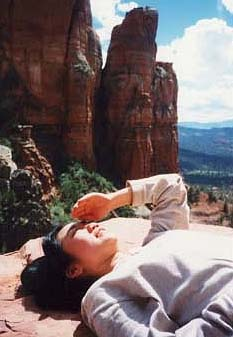

セドナ日記 〜 第３日目 98.5.6
カシドラルロックへ
カシドラルロックへは、いくつかのルートがあるが、ダウンタウン方面から一番近いと思われるルートから、アクセスした。「Y」から南へ179号線を走り、 Chapel RD.を通りすぎ、500Mくらいのところから右側にBack Beyond RDがついている。これを曲がり１Kmくらいで、カシドラルロックに麓の駐車場につく。
カシドラルロックは、天に伸びる門のようにも見えるが、まことに奇石（岩）である。見る方向で、その門の形はいろいろ変化する。実に複雑な構造である。麓から見ると、巨大で、威圧感さえ感じる。
この岩に登るためにも、もちろんトレイルが整備されている。石を積み重ねた、マークが置かれており、どこが道なのかを示してくれる。ベルロックと違い、ある程度、登れるルートが決まっている。きっとどこから登ってもいいのだろうけど、複雑な岩の構造を考えると、マークにしたがってお勧めコースをいくのが懸命だと思う。ベルロックに比べてもかなり、登りがきつく、距離もながい。ときどき、足を滑らせながらも、岩山をよじ登る。眼下がどんどん開けてくる。と、同時にカシドラルロックの天門はさらに巨大になる。最後の急坂を登り来ると、そこは、「風の谷のナウシカ」の世界だった。登ってきた側の反対側は、切り立った岩の崖になっており、その眼下には、Ork Creek（川）が流れている。青い空には、ちょうどいい大きさの白いくも。風は、その切りたった、門を通り抜け、吹き過ぎていく。しかし、この奇妙な岩も、何万年、何百万年の歳月をかけて、この風が、あまり多くない雨と共に彫り出したものだと思うと、何とも感慨深い。人類が産まれる、ずっと前から、少しづづ作られ続けているカシドラルロック。この作業は、今もこれからも続いていく。
この先、カシドラルロックはどんな形に変化していくのだろうか？ そして、人はどの辺まで、この岩の変化を見とどけることができるのだろうか？
気分がとてもよくなった、僕らは、そんな心地よい場所に別れを告げ、来た道をくだっていった。２羽のカラスが飛んでいる。カシドラルロックの高さ分の急降下と急上昇を何度か繰り返していた。